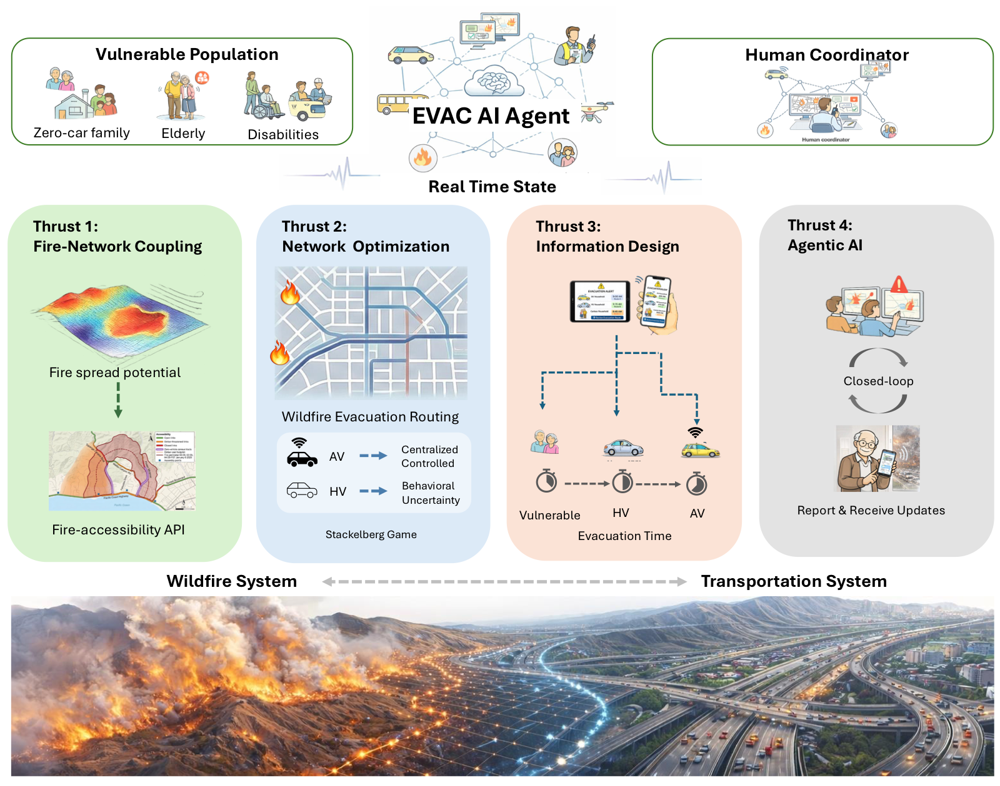
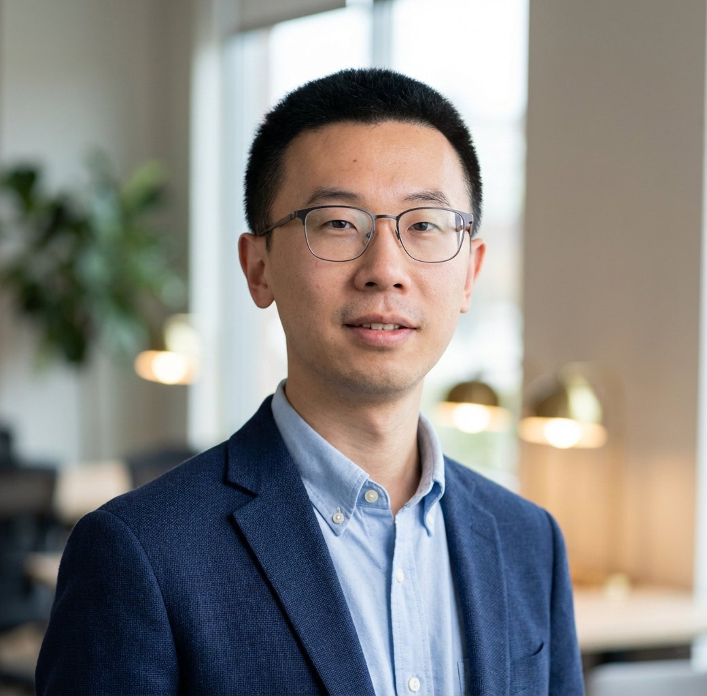
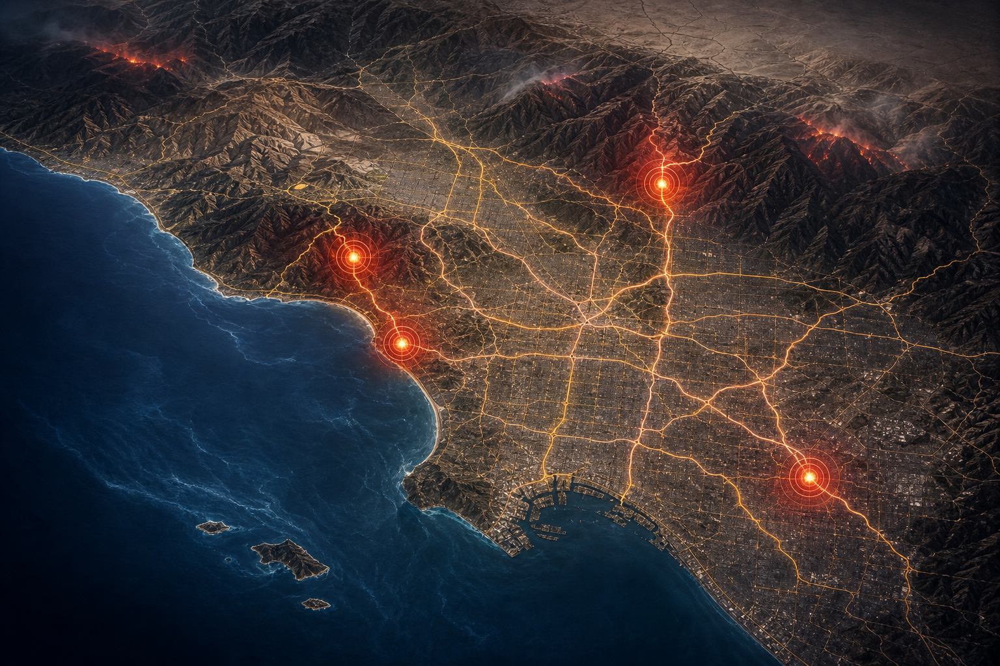

Dynamic fire conditions change the network itself.
Road accessibility, travel time, and safe routing can shift rapidly as fire and weather evolve.

The EVAC-AI initiative brings together researchers in AI, transportation, wildfire science, control, and human-centered decision making.
Wildfire evacuation unfolds at the intersection of fire spread, road accessibility, institutional coordination, information quality, and unequal household resources. EVAC-AI is built around that reality, with special attention to vulnerable populations and mixed-autonomy transportation.
Road accessibility, travel time, and safe routing can shift rapidly as fire and weather evolve.
Zero-car families, older adults, people with disabilities, and multi-lingual communities need different support.
We are building AI that helps people compare options, not automation that bypasses operational judgment.
EVAC-AI connects fire-network coupling, transportation optimization, information design, and human-centered AI into a practical research program for wildfire evacuation.

The EVAC-AI research program is deliberately end-to-end: understand evolving hazard, optimize movement under constraints, communicate effectively, and support human coordinators with useful AI interfaces.
Translate wildfire and weather dynamics into time-varying road accessibility and network state.
Model evacuation when private vehicles, public fleets, and autonomous mobility all compete for limited capacity.
Study how AI-assisted alerts and disclosures can be timely, accessible, and usable across diverse communities.
Build closed-loop human-AI systems that help responders interpret state, weigh tradeoffs, and adapt in the loop.
EVAC-AI brings fire science, transportation, information design, and AI systems into one USC-based team built for operational translation.
Sonny Astani Department of Civil and Environmental Engineering; Thomas Lord Department of Computer Science
Thrust 2 · Network OptimizationFocus: Game-theoretic transportation optimization and guaranteed rescue access in mixed-autonomy systems.
Sonny Astani Department of Civil and Environmental Engineering
Thrust 1 · Fire-Network CouplingFocus: Dynamic fire behavior and road-accessibility inputs for evacuation decision support.
Sonny Astani Department of Civil and Environmental Engineering; Daniel J. Epstein Department of Industrial and Systems Engineering; Ming Hsieh Department of Electrical and Computer Engineering; Aerospace and Mechanical Engineering
Thrust 3 · Information DesignFocus: Targeted information strategies for coordinated, capacity-aware departures.

Thomas Lord Department of Computer Science
Thrust 4 · Agentic AIFocus: Safety-critical, closed-loop AI for coordinators and affected communities.
The project uses Los Angeles-centered case settings to connect historical wildfire events, transportation systems, community needs, and emergency operations. These are research focus areas that help us test ideas where complexity is unavoidable.

Canyon evacuation dynamics, field-oriented validation, and practical resilience questions around constrained road access.
Incident reconstruction and community-centered resilience research informed by recent wildfire experience.
Road access, alerting, and multimodal response challenges that expose how hazard and mobility evolve together.
Southern California mobility, planning, and inter-organizational coordination at the scale where policy and infrastructure decisions matter.
We want this initiative to become a magnet for people who care about operational relevance. If you bring data, context, methods, testing environments, or on-the-ground knowledge, there is likely a meaningful role for you.
Shape the operational reality of the work.
Help us connect theory to real networks.
Keep the work centered on people who need it most.
Expand the scientific and technical frontier.
EVAC-AI is not just about producing models. It is about building datasets, interfaces, exercises, and relationships that make the research legible and useful outside the lab.
Ground research questions in operational pain points and lived experience from the start.
Create retrospective studies, benchmarks, datasets, and evaluation scaffolds others can build on.
Use structured review, tabletop settings, and operational feedback to challenge prototypes before they travel.
Translate results into tools, resources, and training materials that practitioners can actually use.
If you want to help shape how wildfire evacuation intelligence is researched, tested, and translated, this is a good moment to join. We are especially interested in collaborators who care about both rigor and real-world usefulness.
Ruolin Li, Principal Investigator
University of Southern California
ruolinl@usc.edu